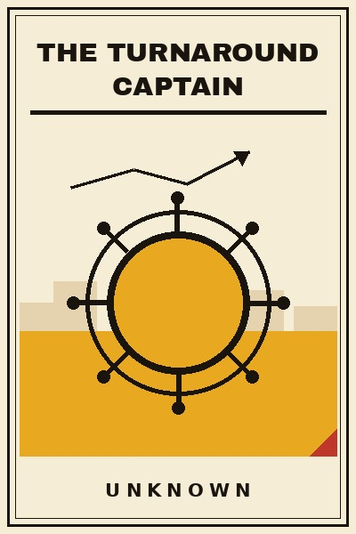

Library › Leadership
The Turnaround Captain - Summary & Key Lessons

Ten lessons on inheriting the broken thing: triage, truth-telling, and the long patient art of bringing a sinking ship home.
📖 OPEN THE FULL INTERACTIVE BREAKDOWN →🌐 Read it in Hindi, Hinglish, Gujarati, Tamil & 22 more languages - free, with audio.
💡 The Big Idea
Anyone can steer in fair weather. This book is for the day you are handed the wheel in a storm: a demoted team, a dying brand, a department everyone has written off. Turnarounds fail more often from wrong diagnosis than from weak effort, so this book spends its early lessons on seeing: the cash truth under the theatre numbers, the culture wounds under the quiet desks, the one or two leaks that matter among the fifty being patched. Then it works the craft: the first ninety days, the truth speech, the choice of what to kill, the small wins that buy belief, and the patience to rebuild trust at the speed of trust. The examples are real, from legendary corporate revivals to the cautionary tales of captains who mistook noise for the leak. Not every ship can be saved, and the book says so honestly. But the difference between a save and a shipwreck is rarely luck. It is method, and method can be learned before the storm.
🧠 The 10 Key Lessons
Lesson 1: First, the Cash Truth
Chapter 1: The Numbers Under the Theatre
Every troubled unit runs two sets of numbers: the theatre numbers for head office and the cash truth that decides survival. Your first job is forensic honesty: weekly cash flow, the real ageing of receivables, which products lose money after true costs, which contracts are trophies on paper and parasites in fact. Do this personally in week one, because the inherited dashboard is usually the art of the problem. The turnaround that starts from theatre numbers optimises the wrong ship with great confidence.
📖 Example: The retail and airline revivals that worked began with new leadership personally rebuilding the weekly cash picture, while the firms that trusted inherited reports kept announcing turnarounds the banks quietly refused to finance. Read the full example →
⚡ Do this: In your first week, build a one-page weekly cash view yourself: money in, money out, the ten largest true costs. Send it unedited to your boss. The truth page is the turnaround's birth certificate.
Lesson 2: Diagnose Before You Decorate
Chapter 2: The Two-Leak Rule
Troubled organisations leak in fifty places and drown in two. The amateur captain patches everything visibly and exhausts the crew; the real one finds the two structural leaks, usually one commercial and one cultural, and concentrates there. Ask the blunt questions: why do customers actually leave, why do the best three people actually stay, where does money die silently every month. The answers are rarely where the noise is. Diagnose with the discipline of a doctor: history, examination, tests, then prescription. The urge to act quickly is ego; the discipline to diagnose is the job.
📖 Example: The celebrated business revivals, from global retail chains to Indian manufacturing plants, all trace to one or two structural fixes made early, while the frenetic reorganisations beside them changed everything except the leak and are now footnotes. Read the full example →
⚡ Do this: Write your two-leak memo at the end of week two: the two structural leaks with evidence. Share it with your team and your boss. Every project that does not touch a leak gets stopped this week.
Lesson 3: The Truth Speech
Chapter 3: Respect Is the First Currency
Demoralised teams have heard every pep talk and believe none of them. What they have not heard is the truth from someone with authority: where things stand, what is broken, what is not, what you do not yet know, and the one thing that will not be compromised. The truth speech, early, blunt and warm, is the cheapest trust you will ever buy, because respect is the first currency of a broken place. You are not there to insult the past; you are there to tell the future honestly. The team decides within weeks whether you are worth believing, and the speech is the first exhibit.
📖 Example: The turnarounds remembered for their cultures, not just their numbers, all began with leaders who narrated the situation honestly to the troops, while the captains who arrived with slogans were quoted sarcastically in the break room within a month. Read the full example →
⚡ Do this: Give your truth speech in week one to everyone at once: five honest sentences about the state, one commitment you cannot break, and one question asked sincerely. Repeat the truth weekly, in the same even voice, good news or bad.
Lesson 4: Kill Something Big
Chapter 4: The Credibility Cut
Turnarounds demand resources, and resources come from stopping things. The captain who trims ten small things looks like a manager; the one who stops one big sacred thing looks like a leader. Every troubled organisation has a sacred cow: the legacy product, the vanity market, the pet project of the previous regime, the branch that exists for nostalgia. Killing one, visibly, early and with clean reasoning, does two jobs at once: it frees cash and it announces that the new era is real. Choose carefully, explain honestly, and never kill for theatre. But kill.
📖 Example: The turnarounds that turned, from consumer brands to airline fleets, each began with a famous cut that shocked the market into attention, while the gentle captains who only trimmed around the edges were read, correctly, as temporary. Read the full example →
⚡ Do this: Name your sacred cow this week: the one expensive thing everyone protects. Build the one-page case to stop it: cash freed, focus gained, risk contained. Present it within a month, and be ready to be unpopular.
Lesson 5: The First Win Is a Story
Chapter 5: Belief Is Manufactured
Exhausted teams do not need five-year visions; they need one win they can touch, soon. Choose an early project ruthlessly for story value: visible, fast, important to the people who matter, clearly finished. Then finish it loudly and credit the team entirely. The first win is not really about the numbers; it is the proof that this captain and this crew can still win anything, and it becomes the story the organisation tells itself in the harder weeks that follow. Manufacture belief the way you manufacture product: deliberately, on schedule.
📖 Example: The sports coaches who revived dead seasons all engineered one early, visible victory against the odds, and the business revivals copy the play: a customer saved, a defect halved, a delivery date met publicly. The story did the compounding. Read the full example →
⚡ Do this: Pick one first-win project this month: visible within ninety days, achievable, meaningful to your best people. Resource it fully, finish it publicly, and give the credit away entirely. Then tell the story at every opportunity for a year.
Lesson 6: Fix the Revenue Engine
Chapter 6: Cost Cuts Buy Time, Revenue Buys Life
Cost discipline is the entry fee of every turnaround, but cost cuts alone produce a smaller version of a dying company. The life comes from fixing the revenue engine: the sales team's broken incentives, the pricing that has not moved in years, the customers quietly leaving who nobody calls. Spend your best hours on the revenue engine while the accountants do the cost work, because the market forgives a lean company with growing revenue and forgives nothing else. The discipline: defend every cost cut, then reinvest a fixed share of the savings into the selling motion, not into comfort.
📖 Example: The retail and IT services firms that escaped their death spirals all combined hard cost resets with a rebuilt sales engine, usually new incentives and old customers called personally, while the pure-cut artists shrank respectably into irrelevance. Read the full example →
⚡ Do this: Split your turnaround into two tracks this week: cost track delegated with weekly targets, revenue track owned by you personally. Call five departing or at-risk customers yourself this month. Ask the last question first: why did you really leave?
Lesson 7: Rebuild at the Speed of Trust
Chapter 7: The Broken Window Census
Broken places are broken in specific, small, visible ways: the promotion promised twice and never made, the toxic star nobody touches, the tool that crashed a hundred times, the colleague fired unfairly and mourned quietly. Make the census of broken windows, fix the five most visible within sixty days, and let the team see the fixes happen. Trust rebuilds at the speed of kept micro-promises, not at the speed of vision statements. The cheap, visible, symbolic repairs carry a morale multiplier no bonus scheme can match, because they prove that words have restarted their marriage to actions.
📖 Example: The revived factories and stores that regained their pride describe the same turning point: leadership fixing small unjust things fast, a replaced manager, a repaired floor, a promise honoured, before any big strategy landed. The strategy was believed because the windows were fixed. Read the full example →
⚡ Do this: Run the broken-window census with your team this fortnight: the specific small injustices and dysfunctions everyone knows. Fix the five most visible in sixty days and announce each fix in one sentence. Keep the list on the wall.
Lesson 8: Hire the A-Players Who Like Storms
Chapter 8: The Storm Species
Turnarounds need a rare species: talented people who are energised by chaos rather than frightened by it. The safe, polished hires from calm companies often drown in the ambiguity, while the scarred, hungry operators, often overlooked elsewhere, thrive. Recruit explicitly for storm temperament: ask candidates what broken thing they fixed, what mess they inherited, what they would do in your two leaks. Then protect these hires fiercely from the antibodies of the old culture, because the wounded organisation will test, exhaust and expel them if you look away. A captain is only as good as the five storm riders around them.
📖 Example: The great revival stories across industries share the same casting: leaders who brought in scarred operators with turnaround histories and shielded them visibly, while the captains who hired polished calm-weather CVs watched them resign inside a year, politely and permanently. Read the full example →
⚡ Do this: Write the storm-species profile for your three most urgent hires: evidence of fixes in broken places, comfort with ambiguity, scars with lessons. Recruit from troubled competitors and forgotten departments. Guard their first year personally.
Lesson 9: The Long Middle
Chapter 9: Where Most Captains Quit
Every turnaround has a long middle: the quarter where the drama has faded, the wins are real but modest, and the organisation is tired of believing. This is where most captains quit, chase a shiny pivot, or declare victory and leave too early, and the ship quietly sinks back. Know the middle by its symptoms, plateaued metrics, cynical jokes returning, your own exhaustion peaking, and counter it deliberately: rotate the crew's visible wins, rest yourself on schedule, and shrink your public promises to what the next ninety days can prove. The middle is not failure. The middle is the actual job.
📖 Example: The multi-year revivals that lasted all describe a dead-calm middle phase that the captains crossed with small promises kept perfectly, while the aborted turnarounds of retail and airline history broke at exactly this plateau, undone by impatience dressed as vision. Read the full example →
⚡ Do this: Write your middle-phase plan now: one modest promise per month for the next six months, achievable and visible. Diary a rest week for yourself. Reread your two-leak memo every month; the middle is when captains drift from it.
Lesson 10: Knowing When Not to Save
Chapter 10: The Honest Rescue
The final lesson is the captain's hardest: some ships cannot be saved, and wisdom lies in seeing it early. Markets close, technologies jump, and balance sheets sometimes pass the point where management skill matters. The honest captain runs the save-or-shut test at fixed checkpoints: is the cash truth improving, is the leak actually closing, would fresh capital choose this business today? If the honest answers stay no, the kindest turnaround is an orderly, dignified ending: jobs wound down with respect, assets sold with transparency, lessons written for the next crew. Captains are remembered for how they end voyages as much as how they save them.
📖 Example: The business histories that honour leaders most are not only the saves but the honest wind-downs, captains who closed dying units with dignity and found their people landings elsewhere, while the zombie-preserving captains spent a decade burning goodwill, capital and careers on ships the sea had already claimed. Read the full example →
⚡ Do this: Set your save-or-shut checkpoint now: a date, three honest metrics, and a named advisor who will tell you the truth. If two checkpoints pass with failing answers, begin the dignified ending while dignity is still affordable.
✅ 5-Step Action Plan
- Build the weekly cash truth page yourself in week one and send it unedited upstairs.
- Write the two-leak memo in week two and stop every project that does not touch a leak.
- Give the truth speech in week one and repeat it weekly in the same even voice.
- Choose, resource and loudly finish one first-win story within ninety days.
- Set the save-or-shut checkpoint with three metrics and one truth-telling advisor.
⚠️ When This Doesn't Work
This is a TheSmallBook Original: written in-house, published under the name Unknown, with no real author to credit. The playbook is original; the examples are real public history (retail and airline revivals, factory turnarounds, honest wind-downs) cited honestly from the record. Nothing here is financial or legal advice: distressed situations need bankers and lawyers at the table early. Board the storm ship at your own discretion.
💀 The Graveyard Proves It
🔌 Circuit City - Fired Its 3,400 Best Salespeople to Save Money. Burn: 567 stores, 34,000 jobs, $12B company. Read the full case study →
💬 Best Quotes from The Turnaround Captain
- “In a turnaround, cash is the diagnosis and hope is the disease.”
- “Fix one leak loudly before patching twenty quietly.”
- “Turnarounds are won in months but trusted in years. Budget both.”
Interactive version: mark lessons as read, listen in your language, share quote cards.